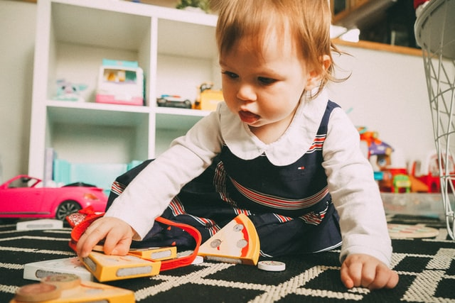
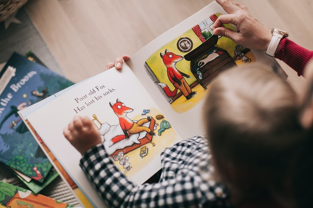
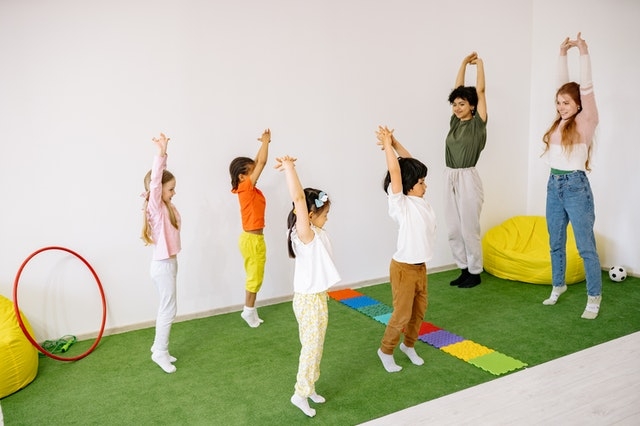

Galería de imágenes
Les damos la bienvenida a este espacio de imagenes que reflejan el día a día en nuestro hermoso jardín.
En cada una de las imagenes podrán ver como los niños y las niñas junto con las maestras se divierten realizando variadas actividades y en el proceso adquirir las herramientas y los conocimientos necesarios para crecer con mente curiosa y creativa.


